Материальная точка движется прямолинейно по закону $x(t)=-t^3-7t^2-7t-5$, где $x$ — расстояние от точки отсчёта в метрах, $t$ — время в секундах, измеренное с начала движения. Найдите её скорость (в м/с) в момент времени $t=7$ с.
ЕГЭ · ПрофильЕГЭ
8Производная и первообразная
Свои задачи matbank по типам заданий ФИПИ, ответы проверены. Номера задач постоянные — их можно задавать, например: «аналоги к № 8: 2, 5, 11».
100 задач
Материальная точка движется прямолинейно по закону $x(t)=\frac{1}{2}t^2+4t+16$, где $x$ — расстояние от точки отсчёта в метрах, $t$ — время в секундах, измеренное с начала движения. В какой момент времени (в секундах) её скорость была равна $9$ м/с?
Прямая $y=-4x-3$ параллельна касательной к графику функции $y=x^2-8x-8$. Найдите абсциссу точки касания.
Материальная точка движется прямолинейно по закону $x(t)=-2t^3-8t^2+4t+23$, где $x$ — расстояние от точки отсчёта в метрах, $t$ — время в секундах, измеренное с начала движения. Найдите её скорость (в м/с) в момент времени $t=2$ с.
Материальная точка движется прямолинейно по закону $x(t)=\frac{3}{2}t^2-8t$, где $x$ — расстояние от точки отсчёта в метрах, $t$ — время в секундах, измеренное с начала движения. В какой момент времени (в секундах) её скорость была равна $4$ м/с?
Прямая $y=-x-7$ параллельна касательной к графику функции $y=x^2+9x$. Найдите абсциссу точки касания.
Материальная точка движется прямолинейно по закону $x(t)=-t^3+6t^2+10t+7$, где $x$ — расстояние от точки отсчёта в метрах, $t$ — время в секундах, измеренное с начала движения. Найдите её скорость (в м/с) в момент времени $t=5$ с.
Материальная точка движется прямолинейно по закону $x(t)=t^2-5t+14$, где $x$ — расстояние от точки отсчёта в метрах, $t$ — время в секундах, измеренное с начала движения. В какой момент времени (в секундах) её скорость была равна $-1$ м/с?
Прямая $y=x+1$ параллельна касательной к графику функции $y=x^2-4x+4$. Найдите абсциссу точки касания.
Материальная точка движется прямолинейно по закону $x(t)=-t^3+2t^2+7t+1$, где $x$ — расстояние от точки отсчёта в метрах, $t$ — время в секундах, измеренное с начала движения. Найдите её скорость (в м/с) в момент времени $t=8$ с.
Материальная точка движется прямолинейно по закону $x(t)=\frac{3}{2}t^2-3t+9$, где $x$ — расстояние от точки отсчёта в метрах, $t$ — время в секундах, измеренное с начала движения. В какой момент времени (в секундах) её скорость была равна $3$ м/с?
Прямая $y=x$ параллельна касательной к графику функции $y=x^2+1$. Найдите абсциссу точки касания.
Материальная точка движется прямолинейно по закону $x(t)=-2t^3+t^2+5t+14$, где $x$ — расстояние от точки отсчёта в метрах, $t$ — время в секундах, измеренное с начала движения. Найдите её скорость (в м/с) в момент времени $t=4$ с.
Материальная точка движется прямолинейно по закону $x(t)=t^2-9t+9$, где $x$ — расстояние от точки отсчёта в метрах, $t$ — время в секундах, измеренное с начала движения. В какой момент времени (в секундах) её скорость была равна $9$ м/с?
Прямая $y=10x-6$ параллельна касательной к графику функции $y=x^2-x-8$. Найдите абсциссу точки касания.
Материальная точка движется прямолинейно по закону $x(t)=t^3-t-23$, где $x$ — расстояние от точки отсчёта в метрах, $t$ — время в секундах, измеренное с начала движения. Найдите её скорость (в м/с) в момент времени $t=8$ с.
Материальная точка движется прямолинейно по закону $x(t)=\frac{3}{2}t^2+3t+5$, где $x$ — расстояние от точки отсчёта в метрах, $t$ — время в секундах, измеренное с начала движения. В какой момент времени (в секундах) её скорость была равна $15$ м/с?
Прямая $y=5x+2$ параллельна касательной к графику функции $y=x^2+5x-1$. Найдите абсциссу точки касания.
Материальная точка движется прямолинейно по закону $x(t)=2t^3-2t^2+9t$, где $x$ — расстояние от точки отсчёта в метрах, $t$ — время в секундах, измеренное с начала движения. Найдите её скорость (в м/с) в момент времени $t=6$ с.
Материальная точка движется прямолинейно по закону $x(t)=t^2-5t-12$, где $x$ — расстояние от точки отсчёта в метрах, $t$ — время в секундах, измеренное с начала движения. В какой момент времени (в секундах) её скорость была равна $11$ м/с?
Прямая $y=-4x+2$ параллельна касательной к графику функции $y=x^2-7x+7$. Найдите абсциссу точки касания.
Материальная точка движется прямолинейно по закону $x(t)=-t^3+6t^2+9t-6$, где $x$ — расстояние от точки отсчёта в метрах, $t$ — время в секундах, измеренное с начала движения. Найдите её скорость (в м/с) в момент времени $t=4$ с.
Материальная точка движется прямолинейно по закону $x(t)=\frac{1}{2}t^2-5t-2$, где $x$ — расстояние от точки отсчёта в метрах, $t$ — время в секундах, измеренное с начала движения. В какой момент времени (в секундах) её скорость была равна $-2$ м/с?
Прямая $y=5x-7$ параллельна касательной к графику функции $y=x^2+2x-5$. Найдите абсциссу точки касания.
Материальная точка движется прямолинейно по закону $x(t)=2t^3-3t^2-4t+4$, где $x$ — расстояние от точки отсчёта в метрах, $t$ — время в секундах, измеренное с начала движения. Найдите её скорость (в м/с) в момент времени $t=7$ с.
Материальная точка движется прямолинейно по закону $x(t)=\frac{1}{2}t^2+6t-10$, где $x$ — расстояние от точки отсчёта в метрах, $t$ — время в секундах, измеренное с начала движения. В какой момент времени (в секундах) её скорость была равна $7$ м/с?
Прямая $y=5x-6$ параллельна касательной к графику функции $y=x^2+7x+3$. Найдите абсциссу точки касания.
Материальная точка движется прямолинейно по закону $x(t)=t^3-5t^2-4t+20$, где $x$ — расстояние от точки отсчёта в метрах, $t$ — время в секундах, измеренное с начала движения. Найдите её скорость (в м/с) в момент времени $t=7$ с.
Материальная точка движется прямолинейно по закону $x(t)=t^2-2t-15$, где $x$ — расстояние от точки отсчёта в метрах, $t$ — время в секундах, измеренное с начала движения. В какой момент времени (в секундах) её скорость была равна $10$ м/с?
Прямая $y=-18x+9$ параллельна касательной к графику функции $y=x^2-8x+4$. Найдите абсциссу точки касания.
На рисунке изображены график функции $y=f(x)$ и касательная к нему в точке с абсциссой $x_0$. Найдите значение производной функции $f(x)$ в точке $x_0$.
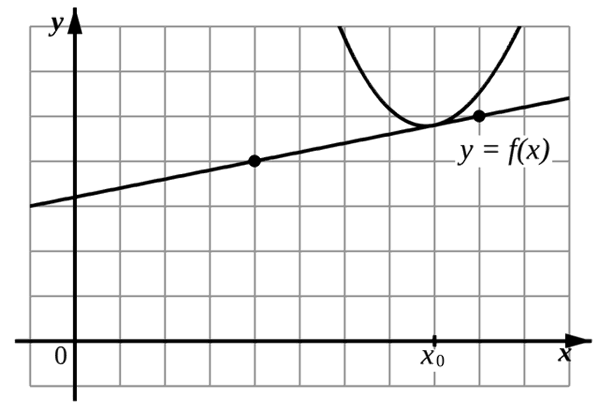
На рисунке изображён график $y=f'(x)$ — производной функции $f(x)$, определённой на интервале $(−4;\ 8)$. Найдите количество точек максимума функции $f(x)$, принадлежащих отрезку $[−2;\ 7]$.
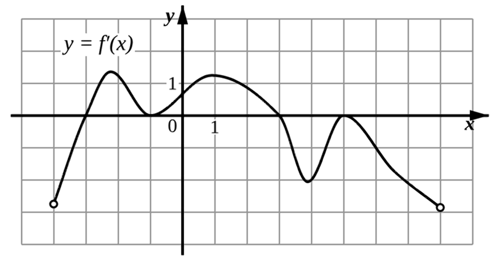
На рисунке изображён график $y=f'(x)$ — производной функции $f(x)$, определённой на интервале $(−4;\ 9)$. В какой точке отрезка $[0;\ 3]$ функция $f(x)$ принимает наименьшее значение?
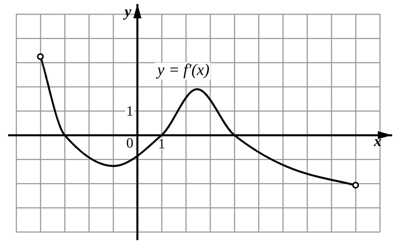
На рисунке изображён график $y=f'(x)$ — производной функции $f(x)$. На оси абсцисс отмечены 6 точек: $x_{1}, x_{2}, x_{3}, x_{4}, x_{5}, x_{6}$. Сколько из этих точек лежит на промежутках возрастания функции $f(x)$?
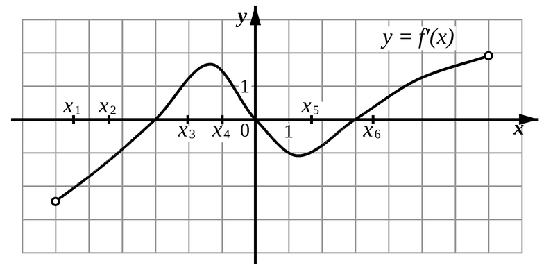
На рисунке изображён график функции $y=f(x)$. На оси абсцисс отмечены 6 точек: $x_{1}, x_{2}, x_{3}, x_{4}, x_{5}, x_{6}$. В скольких из этих точек производная функции $f(x)$ положительна?
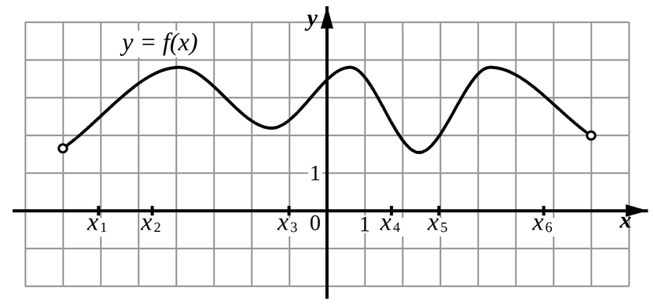
На рисунке изображён график функции $y=f(x)$ и отмечены точки $−6;\ −4;\ 2;\ 4$. В какой из этих точек значение производной наименьшее? В ответе укажите эту точку.
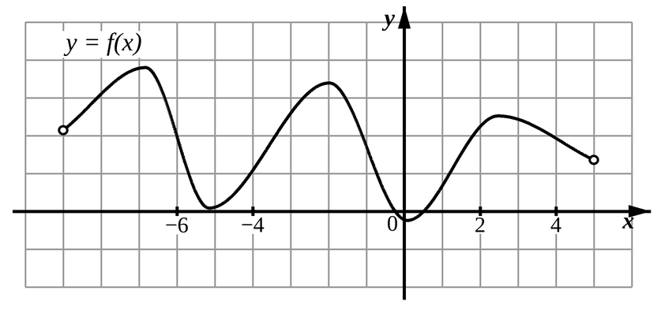
На рисунке изображён график функции $y=f(x)$, определённой на интервале $(−7;\ 4)$. Найдите количество решений уравнения $f'(x)=0$ на отрезке $[−4;\ 1]$.
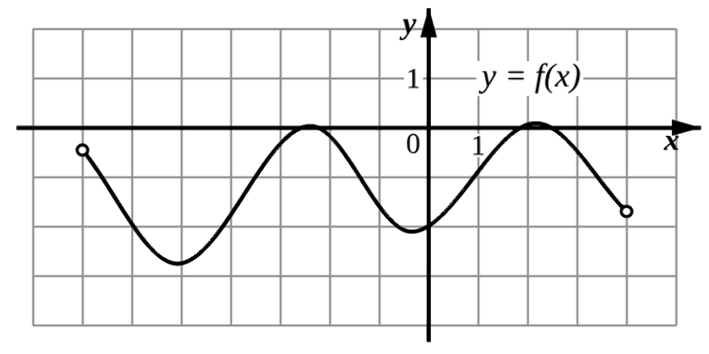
На рисунке изображены график функции $y=f(x)$ и касательная к нему в точке с абсциссой $x_0$. Найдите значение производной функции $f(x)$ в точке $x_0$.
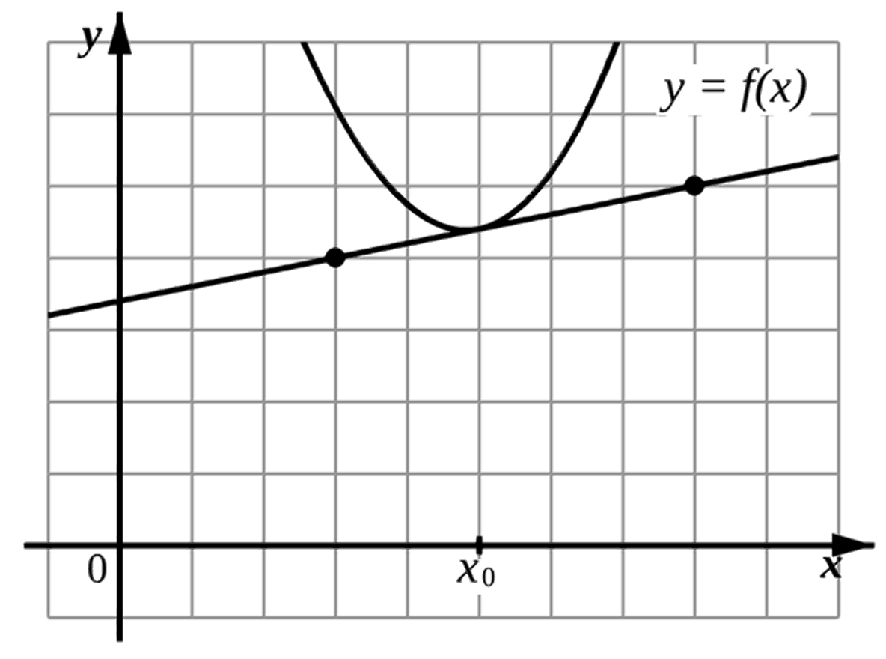
На рисунке изображён график $y=f'(x)$ — производной функции $f(x)$, определённой на интервале $(−9;\ 4)$. Найдите количество точек максимума функции $f(x)$, принадлежащих отрезку $[−5;\ 2]$.
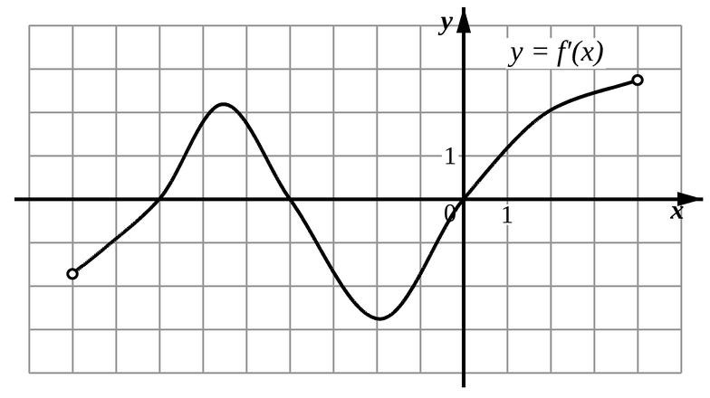
На рисунке изображён график $y=f'(x)$ — производной функции $f(x)$, определённой на интервале $(−7;\ 5)$. В какой точке отрезка $[0;\ 2]$ функция $f(x)$ принимает наибольшее значение?
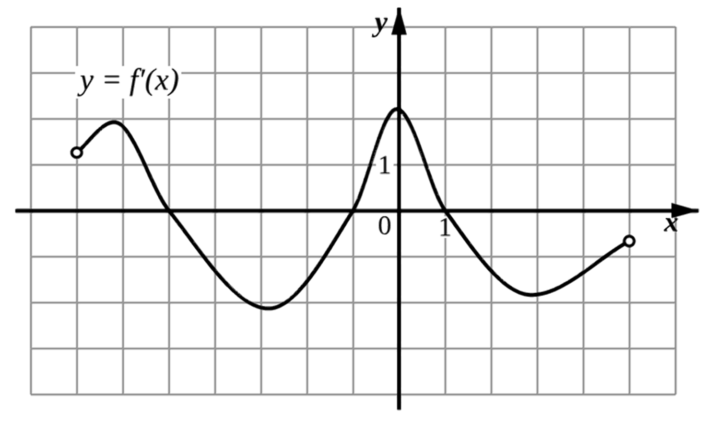
На рисунке изображён график $y=f'(x)$ — производной функции $f(x)$. На оси абсцисс отмечены 6 точек: $x_{1}, x_{2}, x_{3}, x_{4}, x_{5}, x_{6}$. Сколько из этих точек лежит на промежутках возрастания функции $f(x)$?
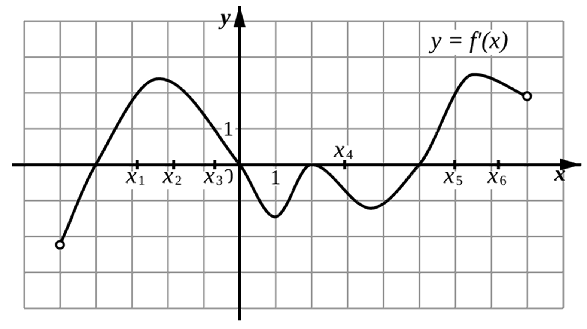
На рисунке изображён график функции $y=f(x)$. На оси абсцисс отмечены 6 точек: $x_{1}, x_{2}, x_{3}, x_{4}, x_{5}, x_{6}$. В скольких из этих точек производная функции $f(x)$ положительна?
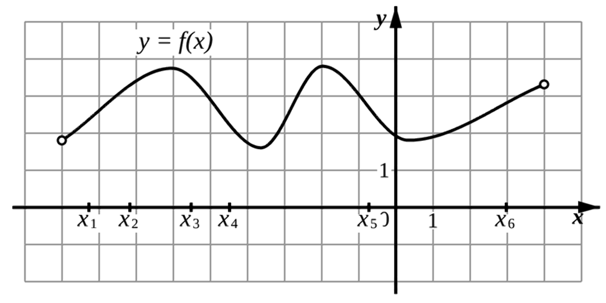
На рисунке изображён график функции $y=f(x)$ и отмечены точки $−8;\ −4;\ −1;\ 1$. В какой из этих точек значение производной наименьшее? В ответе укажите эту точку.
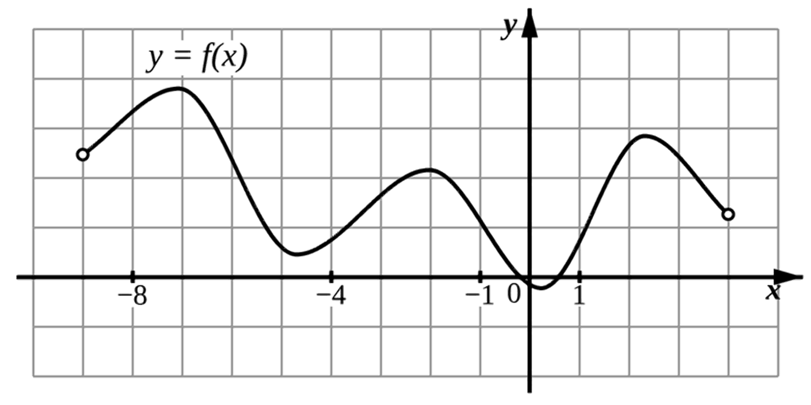
На рисунке изображён график функции $y=f(x)$, определённой на интервале $(−8;\ 6)$. Найдите количество точек, в которых касательная к графику функции $f(x)$ параллельна прямой $y=-1$ или совпадает с ней, на отрезке $[−5;\ 5]$.
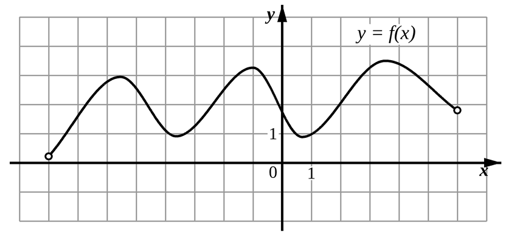
На рисунке изображены график функции $y=f(x)$ и касательная к нему в точке с абсциссой $x_0$. Найдите значение производной функции $f(x)$ в точке $x_0$.
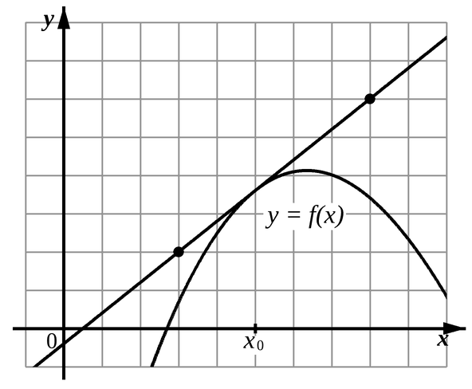
На рисунке изображён график $y=f'(x)$ — производной функции $f(x)$, определённой на интервале $(−6;\ 7)$. Найдите количество точек экстремума функции $f(x)$, принадлежащих отрезку $[−5;\ 3]$.
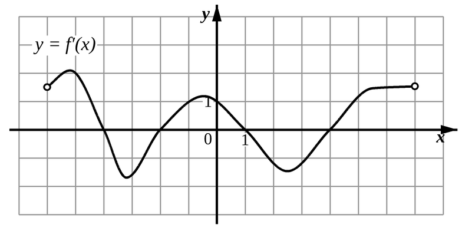
На рисунке изображён график $y=f'(x)$ — производной функции $f(x)$, определённой на интервале $(−9;\ 3)$. В какой точке функция $f(x)$ имеет максимум?
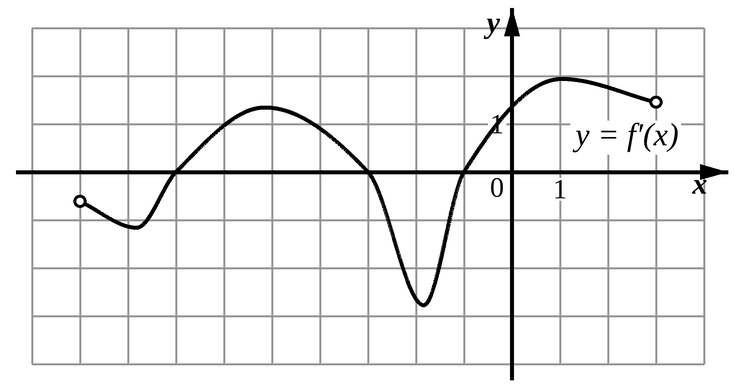
На рисунке изображён график $y=f'(x)$ — производной функции $f(x)$. На оси абсцисс отмечены 6 точек: $x_{1}, x_{2}, x_{3}, x_{4}, x_{5}, x_{6}$. Сколько из этих точек лежит на промежутках убывания функции $f(x)$?
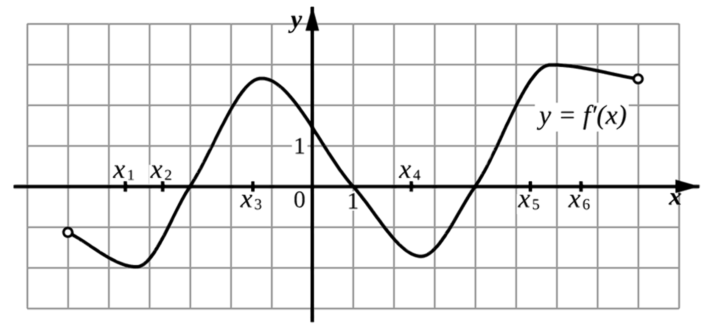
На рисунке изображён график функции $y=f(x)$. На оси абсцисс отмечены 7 точек: $x_{1}, x_{2}, x_{3}, x_{4}, x_{5}, x_{6}, x_{7}$. В скольких из этих точек производная функции $f(x)$ положительна?
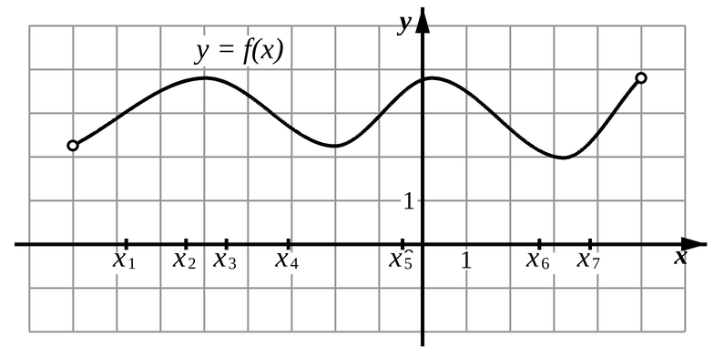
На рисунке изображён график функции $y=f(x)$ и отмечены точки $−4;\ 4;\ 5;\ 7$. В какой из этих точек значение производной наименьшее? В ответе укажите эту точку.
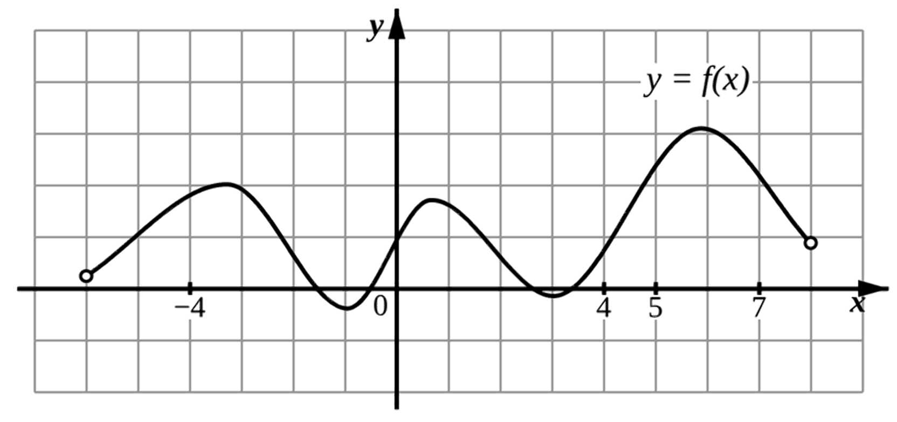
На рисунке изображён график функции $y=f(x)$, определённой на интервале $(−9;\ 4)$. Найдите количество точек, в которых касательная к графику функции $f(x)$ параллельна прямой $y=-3$ или совпадает с ней, на отрезке $[−8;\ 2]$.
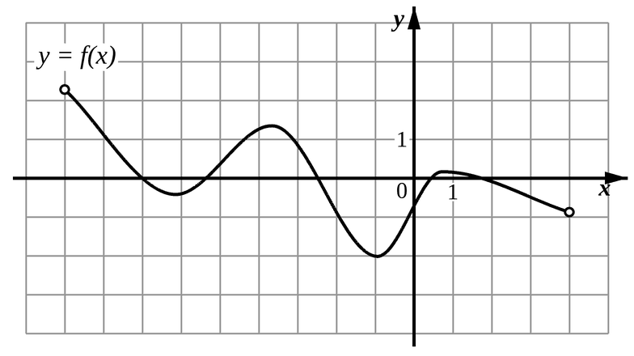
На рисунке изображены график функции $y=f(x)$ и касательная к нему в точке с абсциссой $x_0$. Найдите значение производной функции $f(x)$ в точке $x_0$.
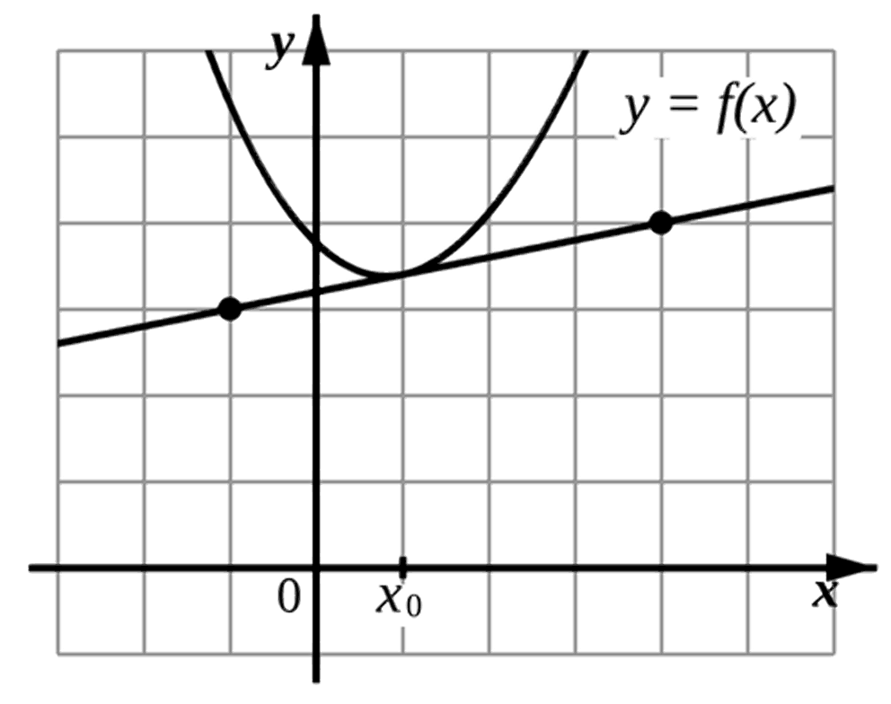
На рисунке изображён график $y=f'(x)$ — производной функции $f(x)$, определённой на интервале $(−8;\ 6)$. Найдите количество точек максимума функции $f(x)$, принадлежащих отрезку $[−4;\ 5]$.
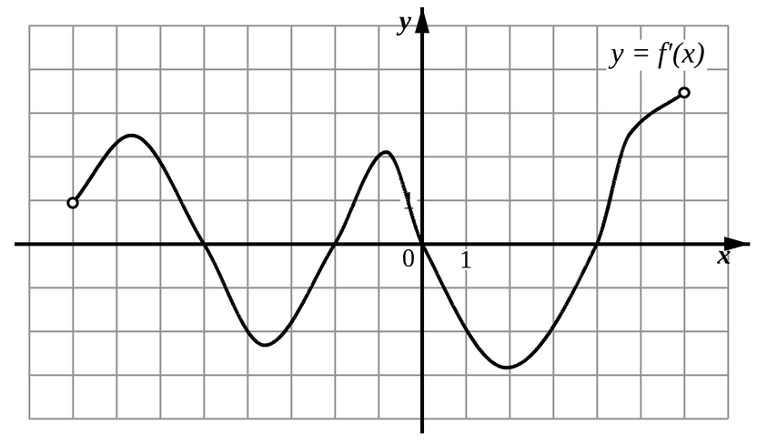
На рисунке изображён график $y=f'(x)$ — производной функции $f(x)$, определённой на интервале $(−5;\ 6)$. В какой точке функция $f(x)$ имеет максимум?
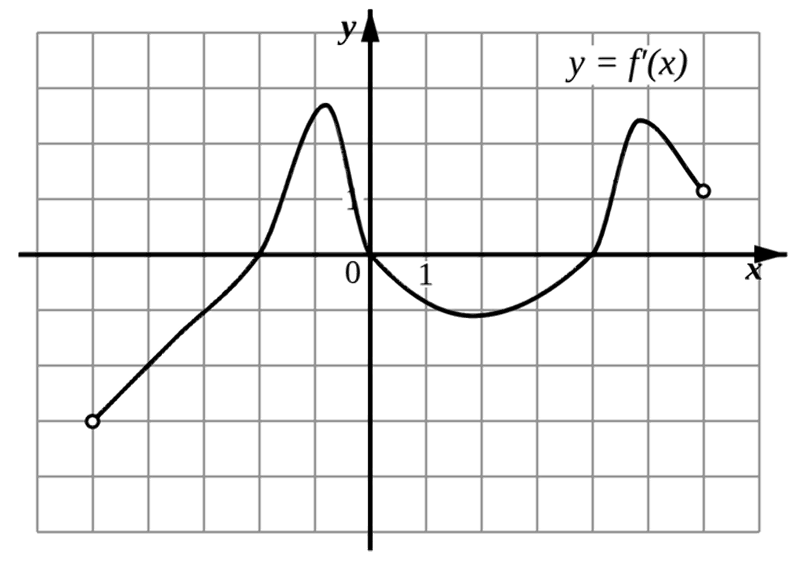
На рисунке изображён график $y=f'(x)$ — производной функции $f(x)$. На оси абсцисс отмечены 7 точек: $x_{1}, x_{2}, x_{3}, x_{4}, x_{5}, x_{6}, x_{7}$. Сколько из этих точек лежит на промежутках убывания функции $f(x)$?
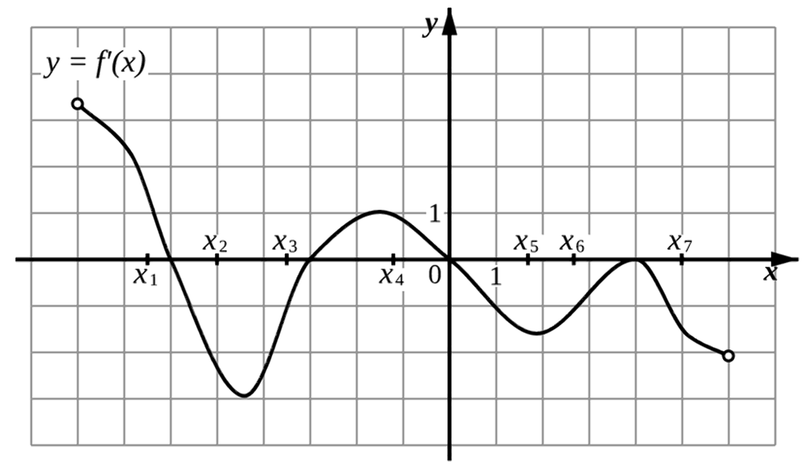
На рисунке изображён график функции $y=f(x)$. На оси абсцисс отмечены 8 точек: $x_{1}, x_{2}, x_{3}, x_{4}, x_{5}, x_{6}, x_{7}, x_{8}$. В скольких из этих точек производная функции $f(x)$ отрицательна?
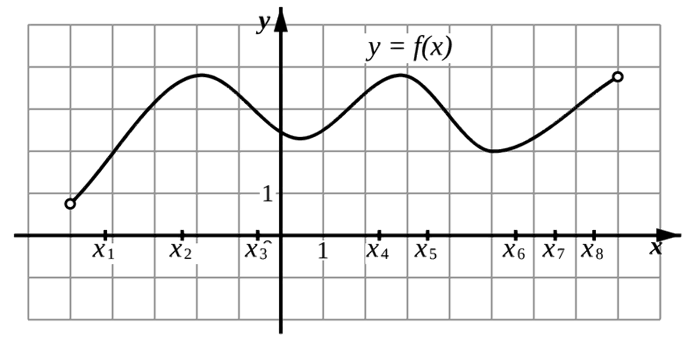
На рисунке изображён график функции $y=f(x)$ и отмечены точки $−3;\ 2;\ 4;\ 7$. В какой из этих точек значение производной наименьшее? В ответе укажите эту точку.
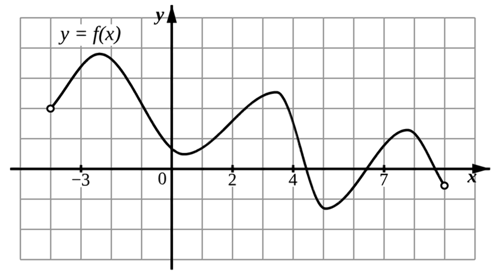
На рисунке изображён график функции $y=f(x)$, определённой на интервале $(−9;\ 2)$. Найдите количество точек, в которых касательная к графику функции $f(x)$ параллельна прямой $y=5$ или совпадает с ней, на отрезке $[−6;\ −1]$.
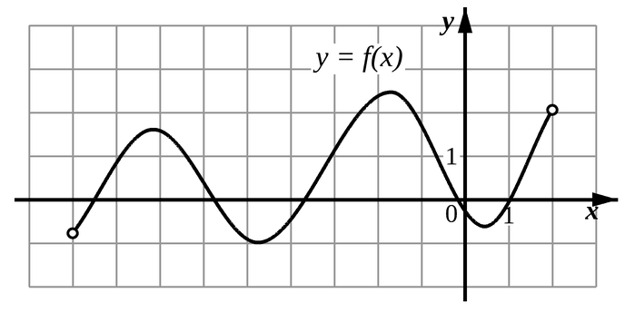
На рисунке изображены график функции $y=f(x)$ и касательная к нему в точке с абсциссой $x_0$. Найдите значение производной функции $f(x)$ в точке $x_0$.
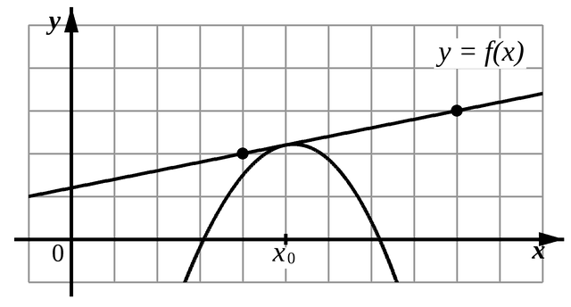
На рисунке изображён график $y=f'(x)$ — производной функции $f(x)$, определённой на интервале $(−9;\ 4)$. Найдите количество точек минимума функции $f(x)$, принадлежащих отрезку $[−6;\ 3]$.
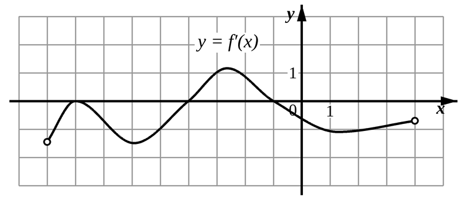
На рисунке изображён график $y=f'(x)$ — производной функции $f(x)$, определённой на интервале $(−5;\ 8)$. В какой точке отрезка $[0;\ 4]$ функция $f(x)$ принимает наименьшее значение?
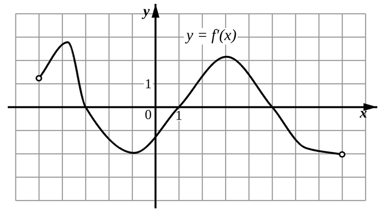
На рисунке изображён график $y=f'(x)$ — производной функции $f(x)$. На оси абсцисс отмечены 6 точек: $x_{1}, x_{2}, x_{3}, x_{4}, x_{5}, x_{6}$. Сколько из этих точек лежит на промежутках убывания функции $f(x)$?
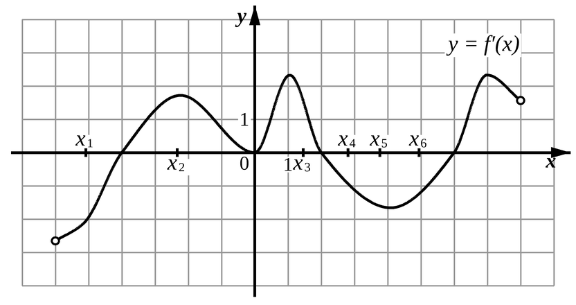
На рисунке изображён график функции $y=f(x)$. На оси абсцисс отмечены 6 точек: $x_{1}, x_{2}, x_{3}, x_{4}, x_{5}, x_{6}$. В скольких из этих точек производная функции $f(x)$ положительна?
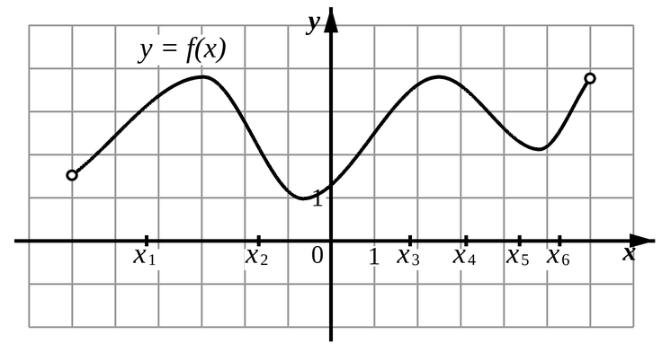
На рисунке изображён график функции $y=f(x)$ и отмечены точки $−8;\ −6;\ −4;\ −2$. В какой из этих точек значение производной наименьшее? В ответе укажите эту точку.
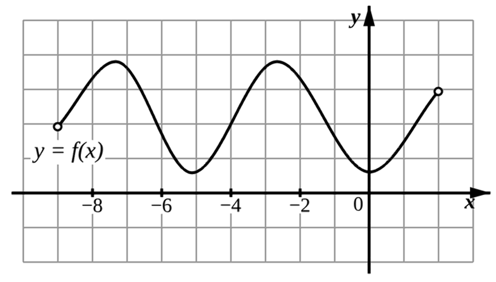
На рисунке изображён график функции $y=f(x)$, определённой на интервале $(−7;\ 7)$. Найдите количество точек, в которых касательная к графику функции $f(x)$ параллельна прямой $y=4$ или совпадает с ней, на отрезке $[−6;\ 6]$.
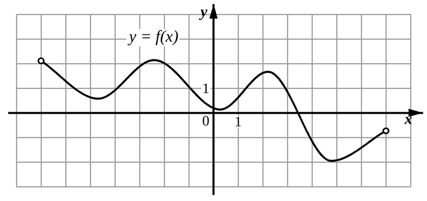
На рисунке изображены график функции $y=f(x)$ и касательная к нему в точке с абсциссой $x_0$. Найдите значение производной функции $f(x)$ в точке $x_0$.
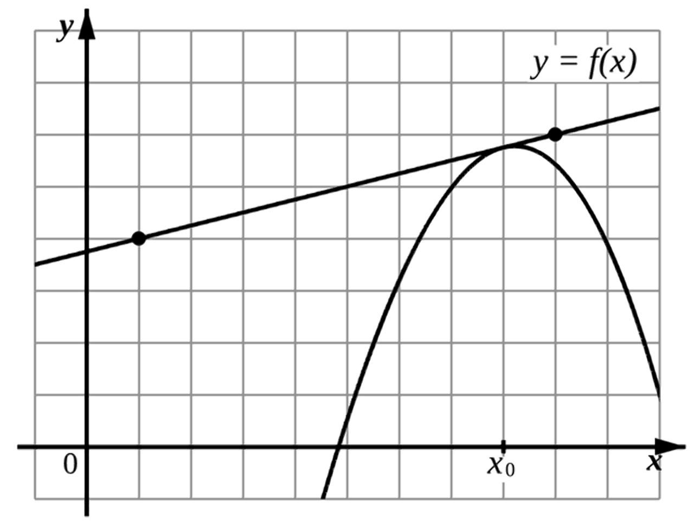
На рисунке изображён график $y=f'(x)$ — производной функции $f(x)$, определённой на интервале $(−7;\ 6)$. Найдите количество точек минимума функции $f(x)$, принадлежащих отрезку $[−4;\ 5]$.
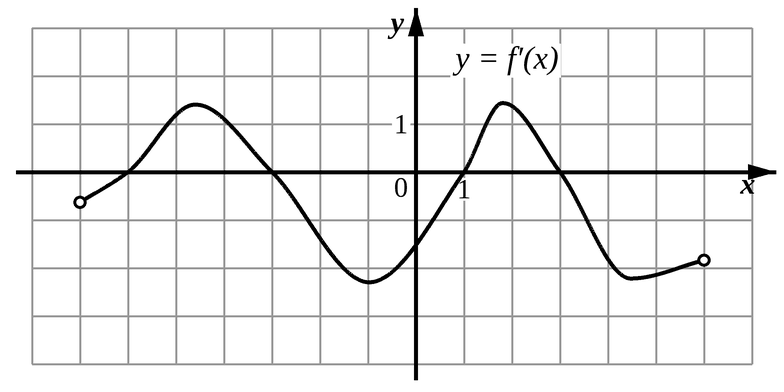
На рисунке изображён график $y=f'(x)$ — производной функции $f(x)$, определённой на интервале $(−6;\ 8)$. Найдите точку экстремума функции $f(x)$, принадлежащую отрезку $[4;\ 7]$.
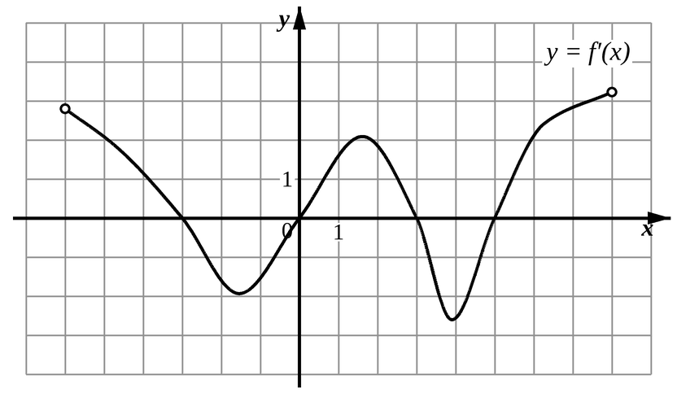
На рисунке изображён график $y=f'(x)$ — производной функции $f(x)$. На оси абсцисс отмечены 6 точек: $x_{1}, x_{2}, x_{3}, x_{4}, x_{5}, x_{6}$. Сколько из этих точек лежит на промежутках возрастания функции $f(x)$?
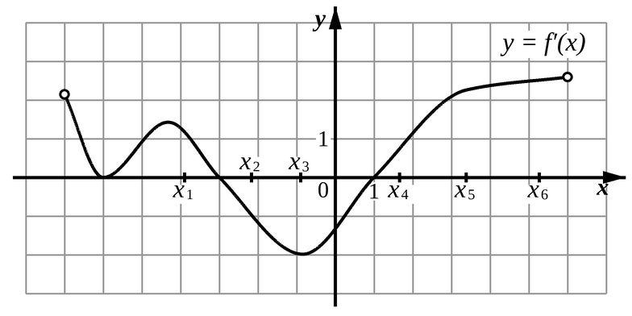
На рисунке изображён график функции $y=f(x)$. На оси абсцисс отмечены 6 точек: $x_{1}, x_{2}, x_{3}, x_{4}, x_{5}, x_{6}$. В скольких из этих точек производная функции $f(x)$ отрицательна?
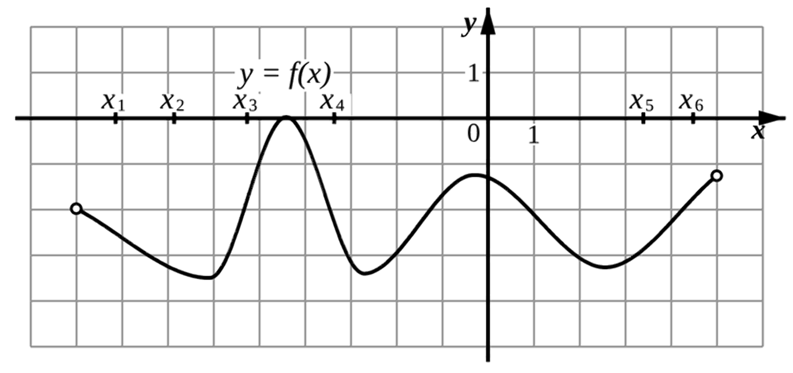
На рисунке изображён график функции $y=f(x)$ и отмечены точки $−5;\ −3;\ −1;\ 1$. В какой из этих точек значение производной наименьшее? В ответе укажите эту точку.
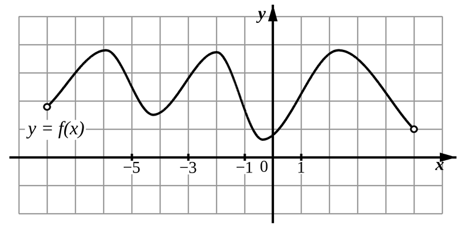
На рисунке изображён график функции $y=f(x)$, определённой на интервале $(−7;\ 4)$. Найдите количество точек, в которых касательная к графику функции $f(x)$ параллельна прямой $y=4$ или совпадает с ней, на отрезке $[−6;\ 1]$.
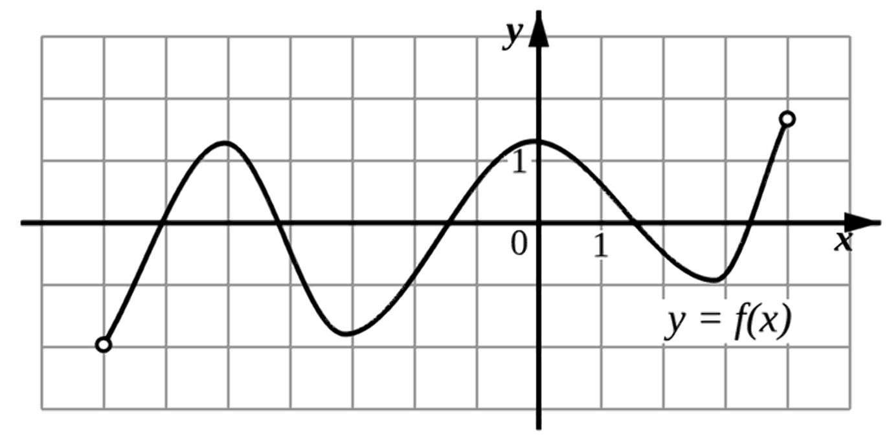
На рисунке изображены график функции $y=f(x)$ и касательная к нему в точке с абсциссой $x_0$. Найдите значение производной функции $f(x)$ в точке $x_0$.
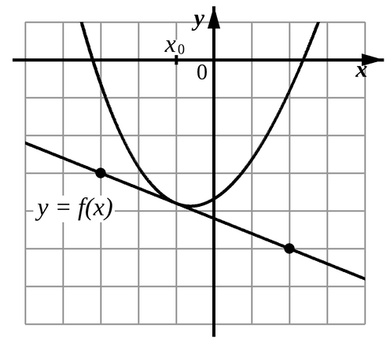
На рисунке изображён график $y=f'(x)$ — производной функции $f(x)$, определённой на интервале $(−9;\ 5)$. Найдите количество точек максимума функции $f(x)$, принадлежащих отрезку $[−5;\ 2]$.
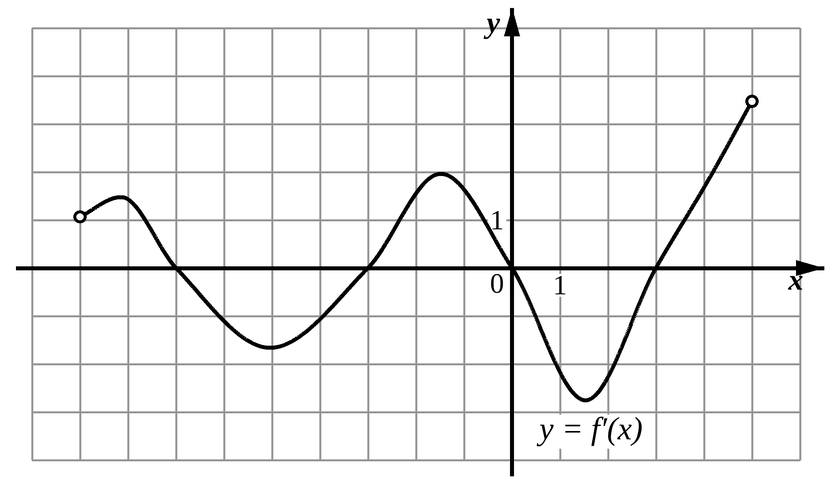
На рисунке изображён график $y=f'(x)$ — производной функции $f(x)$, определённой на интервале $(−4;\ 9)$. В какой точке функция $f(x)$ имеет минимум?
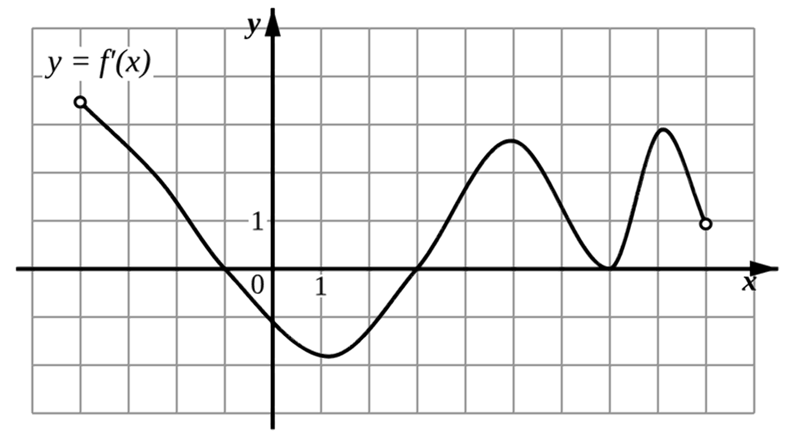
На рисунке изображён график $y=f'(x)$ — производной функции $f(x)$. На оси абсцисс отмечены 6 точек: $x_{1}, x_{2}, x_{3}, x_{4}, x_{5}, x_{6}$. Сколько из этих точек лежит на промежутках возрастания функции $f(x)$?
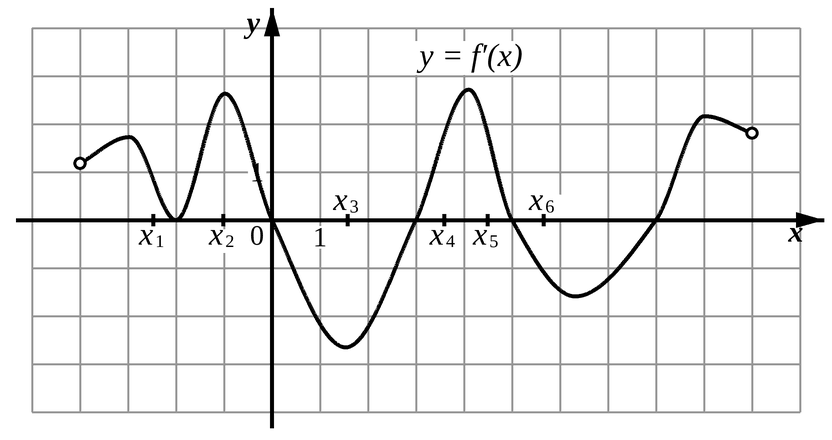
На рисунке изображён график функции $y=f(x)$. На оси абсцисс отмечены 6 точек: $x_{1}, x_{2}, x_{3}, x_{4}, x_{5}, x_{6}$. В скольких из этих точек производная функции $f(x)$ отрицательна?
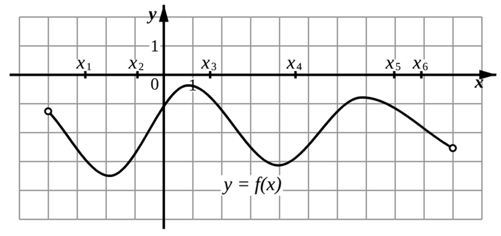
На рисунке изображён график функции $y=f(x)$ и отмечены точки $−4;\ −3;\ −1;\ 1$. В какой из этих точек значение производной наименьшее? В ответе укажите эту точку.
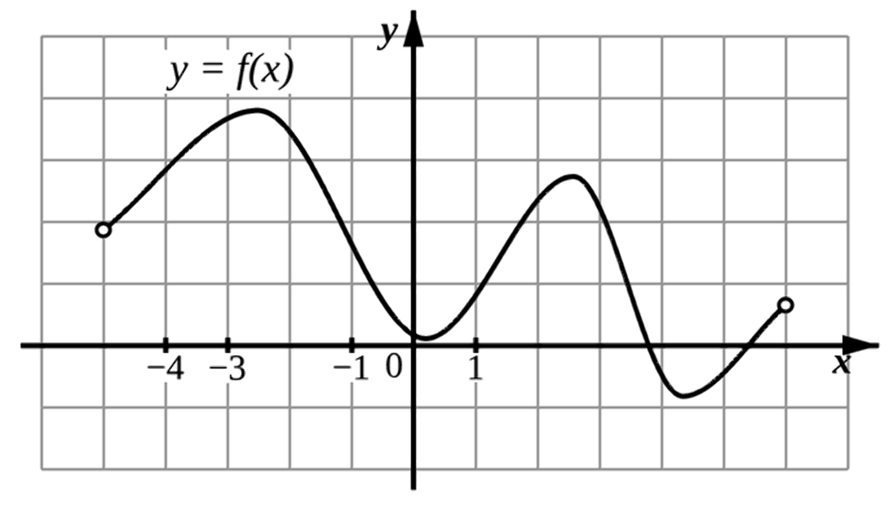
На рисунке изображён график функции $y=f(x)$, определённой на интервале $(−7;\ 5)$. Найдите количество решений уравнения $f'(x)=0$ на отрезке $[−4;\ 4]$.
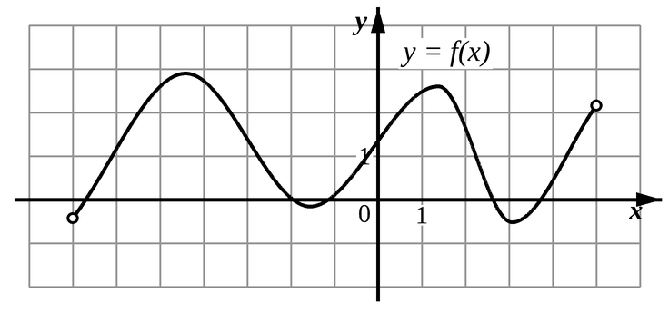
На рисунке изображены график функции $y=f(x)$ и касательная к нему в точке с абсциссой $x_0$. Найдите значение производной функции $f(x)$ в точке $x_0$.
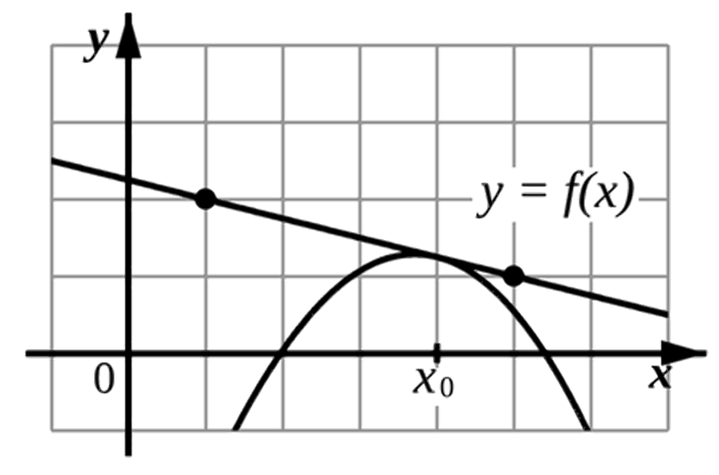
На рисунке изображён график $y=f'(x)$ — производной функции $f(x)$, определённой на интервале $(−6;\ 7)$. Найдите количество точек экстремума функции $f(x)$, принадлежащих отрезку $[−5;\ 4]$.
На рисунке изображён график $y=f'(x)$ — производной функции $f(x)$, определённой на интервале $(−4;\ 8)$. В какой точке функция $f(x)$ имеет минимум?
На рисунке изображён график $y=f'(x)$ — производной функции $f(x)$. На оси абсцисс отмечены 6 точек: $x_{1}, x_{2}, x_{3}, x_{4}, x_{5}, x_{6}$. Сколько из этих точек лежит на промежутках убывания функции $f(x)$?
На рисунке изображён график функции $y=f(x)$. На оси абсцисс отмечены 6 точек: $x_{1}, x_{2}, x_{3}, x_{4}, x_{5}, x_{6}$. В скольких из этих точек производная функции $f(x)$ отрицательна?
На рисунке изображён график функции $y=f(x)$ и отмечены точки $−4;\ −3;\ −1;\ 3$. В какой из этих точек значение производной наименьшее? В ответе укажите эту точку.
На рисунке изображён график функции $y=f(x)$, определённой на интервале $(−5;\ 6)$. Найдите количество решений уравнения $f'(x)=0$ на отрезке $[−3;\ 5]$.
На рисунке изображены график функции $y=f(x)$ и касательная к нему в точке с абсциссой $x_0$. Найдите значение производной функции $f(x)$ в точке $x_0$.
На рисунке изображён график $y=f'(x)$ — производной функции $f(x)$, определённой на интервале $(−7;\ 7)$. Найдите количество точек минимума функции $f(x)$, принадлежащих отрезку $[−5;\ 3]$.
На рисунке изображён график $y=f'(x)$ — производной функции $f(x)$, определённой на интервале $(−6;\ 7)$. Найдите точку экстремума функции $f(x)$, принадлежащую отрезку $[−5;\ −3]$.
На рисунке изображён график $y=f'(x)$ — производной функции $f(x)$. На оси абсцисс отмечены 6 точек: $x_{1}, x_{2}, x_{3}, x_{4}, x_{5}, x_{6}$. Сколько из этих точек лежит на промежутках убывания функции $f(x)$?
На рисунке изображён график функции $y=f(x)$. На оси абсцисс отмечены 6 точек: $x_{1}, x_{2}, x_{3}, x_{4}, x_{5}, x_{6}$. В скольких из этих точек производная функции $f(x)$ положительна?
На рисунке изображён график функции $y=f(x)$ и отмечены точки $−3;\ −1;\ 1;\ 3$. В какой из этих точек значение производной наименьшее? В ответе укажите эту точку.
На рисунке изображён график функции $y=f(x)$, определённой на интервале $(−5;\ 7)$. Найдите количество решений уравнения $f'(x)=0$ на отрезке $[−4;\ 4]$.
На рисунке изображены график функции $y=f(x)$ и касательная к нему в точке с абсциссой $x_0$. Найдите значение производной функции $f(x)$ в точке $x_0$.
На рисунке изображён график $y=f'(x)$ — производной функции $f(x)$, определённой на интервале $(−9;\ 4)$. Найдите количество точек максимума функции $f(x)$, принадлежащих отрезку $[−8;\ 3]$.
На рисунке изображён график $y=f'(x)$ — производной функции $f(x)$, определённой на интервале $(−9;\ 4)$. В какой точке отрезка $[−1;\ 2]$ функция $f(x)$ принимает наибольшее значение?
На рисунке изображён график $y=f'(x)$ — производной функции $f(x)$. На оси абсцисс отмечены 6 точек: $x_{1}, x_{2}, x_{3}, x_{4}, x_{5}, x_{6}$. Сколько из этих точек лежит на промежутках возрастания функции $f(x)$?
На рисунке изображён график функции $y=f(x)$. На оси абсцисс отмечены 7 точек: $x_{1}, x_{2}, x_{3}, x_{4}, x_{5}, x_{6}, x_{7}$. В скольких из этих точек производная функции $f(x)$ положительна?
На рисунке изображён график функции $y=f(x)$ и отмечены точки $−4;\ −2;\ −1;\ 3$. В какой из этих точек значение производной наибольшее? В ответе укажите эту точку.
На рисунке изображён график функции $y=f(x)$, определённой на интервале $(−5;\ 7)$. Найдите количество точек, в которых касательная к графику функции $f(x)$ параллельна прямой $y=5$ или совпадает с ней, на отрезке $[−4;\ 6]$.